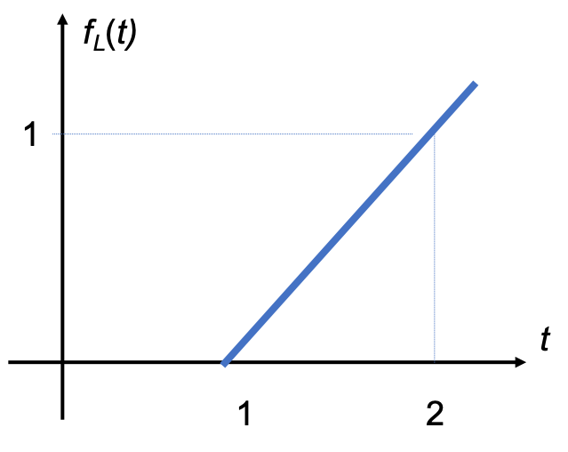
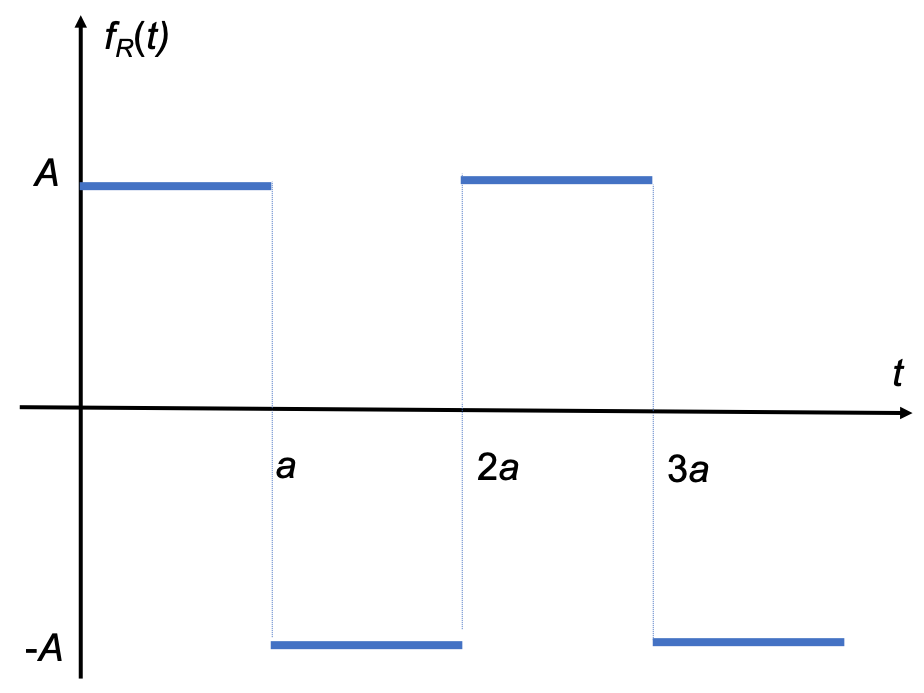

Worksheet 4
Contents
Worksheet 4#
To accompany Unit 3.1 Laplace Transform#
Colophon#
This worksheet can be downloaded as a PDF file. We will step through this worksheet in class.
A printout of this worksheet will be distributed before the second class meeting in the Week 2: Classroom Activities section of the Canvas site. I will also distribute a copy to your personal Worksheets section of the OneNote Class Notebook so that you can add your own notes using OneNote.
You are expected to have at least watched the video presentation of Chapter 3.1 of the notes before coming to class. If you haven’t watch it afterwards!
After class, the lecture recording and the annotated version of this worksheet will be made available to you via OneNote and through Canvas.
First hour quiz: The Laplace and inverse Laplace transforms#
This will be a group activity. If you did the quiz in Canvas before class you will be in a good place to get these answers.
Question 1: The Laplace Transform#
Without looking it up, which of these integrals represents the Laplace and Inverse laplace transforms?
| A. |
\[\frac{1}{2\pi j}\int_{\sigma-j\omega}^{\sigma+j\omega}\,F(s)\,e^{st}\,ds\]
| B. |
\[\int_{0}^{\infty}\,f(t)\,e^{-st}\,dt\]
|
| C. |
\[\int_{-\infty}^{t}\,f(\tau)\,g(t-\tau)\,d\tau\]
| D. |
\[\int_{-j\omega}^{+j\omega}\,f(t)\,e^{-j\omega t}\,dt\]
|
Bonus: what are the other two integrals?
Question 2: Match the Laplace transform to the time-domain operator#
| 1. |
\[\int_{-\infty}^{t}\,f(\tau)\,d\tau\]
| A. |
\[\frac{F(s)}{s}+\frac{f(0^-)}{s}\]
|
| 2. |
\[\lim_{t\rightarrow 0}\,f(t)\]
| B. |
\[sF(s) - f(0^-)\]
|
| 3. |
\[\int_0^t\,f_1(\tau)f_2(t-\tau)\,d\tau\]
| C. |
\[\frac{\int_{0}^{T}\,f(t)\,e^{-st}}{1-e^{-sT}}\]
|
| 4. |
\[\frac{d}{dt}\,f(t)\]
| D. |
\[F_1(s)\,F_2(s)\]
|
| 5. |
\[f(t + nT)\]
| E. |
\[\lim_{s\rightarrow \infty}\,sF(s)\]
|
Question 3: Properties of Laplace transforms#
Match each of these mathematical properties to the associated Laplace transform property.
| 1. | Linearity | A. |
\[f(t - a)\,u_0(t - a) \Leftrightarrow e^{-as} F(s)\]
|
| 2. | Time Scaling | B. |
\[c_1f_1(t) + c_2f_2(t)+ \cdots + c_nf_n(t)\Leftrightarrow c_1F_1(s) + c_2F_2(s) + \cdots + c_nF_n(s)\]
|
| 3. | Time-shift | C. |
\[e^{-at}\, f(t) \Leftrightarrow F(s + a)\]
|
| 4. | Frequency Shift | D. |
\[f(at) \Leftrightarrow (1/a) \, F (s/a)\]
|
Question 4: Name that property#
What property is this?
A. Convolution in the time domain
B. Initial value theorem
C. Final value theorem
D. Differentiation in the time domain
E. Integration in the time domain
Question: Match the elementary signal to its Laplace transform#
| 1. | Dirac delta (unit impulse) |
\[\delta(t)\]
| A. |
\[e^{-as}\]
|
| 2. | Unit step |
\[u_0(t)\]
| B. |
\[\frac{1-e^{-as}}{s}\]
|
| 3. | Unit ramp |
\[u_1(t) = t u_0(t)\]
| C. |
\[\frac{1}{s}\]
|
| 4. | Exponential decay |
\[e^{-at}u_0(t)\]
| D. |
\[1\]
|
| 5. | Damped sinusoid |
\[e^{-at}\,\sin(\omega t)u_0(t)\]
| E. |
\[\frac{1}{s^2}\]
|
| 6. | Sampling function |
\[\delta(t-a)\]
| F. |
\[\frac{1}{s+a}\]
|
| 7. | Gating function |
\[u_0(t)-u_0(t-a)\]
| G. |
\[\frac{\omega}{(s+a)^2+\omega^2}\]
|
End of first hour quiz#
Is there anything in this quiz that you think we should go over in more detail in class?
Add to the 💬❓Questions and Discussion on the Laplace Transformation and its Applications board in Canvas after class.
Laplace transforms of common waveforms#
We will work through a few of the following on the board in class
Pulse
Linear segment
Triangular waveform
Rectangular periodic waveform (square wave)
Half rectified sine wave
Pulse#
Compute the Laplace transform of the pulse shown in the figure.

For full solution see Example 2.4.1 in Karris.
Line segment#
Compute the Laplace transform of the line segment shown below.

For full solution see Example 2.4.2 in Karris.
Triangular Pulse#
Compute the Laplace transform of the triangular pulse shown below

For full solution see Examples in 2.4.3 in Karris.
Square Wave#
Compute the Laplace transform of the periodic function shown below.

For full solution see Example 2.4.4 in Karris.
Half-rectified Sinewave#
Compute the Laplace Transform of the half-rectified sine wave shown below.

For full solution see Example 2.4.5 in Karris.
Homework#
Attempt at least one of the end-of-chapter exercises from each question 1-7 of Section 2.7 of [Karris, 2012]. Don’t look at the answers until you have attempted the problems.
If we have time, I will work through one or two of these in class.
References#
See Bibliography.
Answers to in-class problems#
- \[Au_0(t)-Au_0(t-a)\Leftrightarrow \frac{A\left(1-e^{-as}\right)}{s}.\]
- \[(t-1)u_0(t-1)\Leftrightarrow \frac{e^{-s}}{s^2}.\]
- \[f_T(t)\Leftrightarrow \frac{\left(1-e^{-s}\right)^2}{s^2}.\]
- \[f_R(t)\Leftrightarrow \frac{A\tanh \left(\frac{As}{2}\right)}{s}.\]
- \[f_{HW}(t) \Leftrightarrow \frac{1}{\left(s^2 + 1\right)\left(1-e^{\pi s}\right)}.\]